# pip install sympy
from sympy import *
init_printing()مقدمه
این کتاب از روی کتاب پایتون برای همه [1] تهیه شده است. باقی محتوا از منیع اینترنتی آزاد گرفته شده و یا توسط نویسندگان تولید شدهاند. بنابراین کپی برداری با ذکر منبع آزاد میباشد.
معماری سخت افزار کامپیوتر
اگر ما در ابتدای ورود به مسیر برنامهنویسی هستیم، بهتر است کمی درمورد اینکه کامپیوتر چگونه کار میکند، صحبت کنیم. خوب است بدانیم، قسمتهای مختلف یک کامپیوتر به زبان بسیار ساده، به این ترتیب هستند:
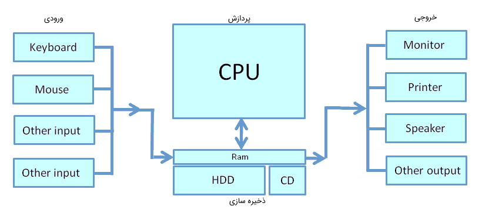
تعاریف سطح بالای این قطعات به شرح زیر است:
پردازنده مرکزی یا Central Processing Unit (CPU): میتواند در هر ثانیه چندین کار را انجام دهد طوری که ما احساس کنیم کارها بطور موازی انجام میشوند. اینکه چه تعداد کار را در یک ثانیه انجام دهد، به سرعت پردازنده ما بستگی دارد. بطور مثال، اگر سرعت پردازنده ما 3.0 گیگاهرتز (3.0 Gigahertz) باشد، به معنی این است که به تعداد سه میلیارد کار در هر ثانیه، میتواند انجام دهد.
حافظه اصلی یا Main Memory: برای ذخیره و دردسترس قرار دادن اطلاعات ضروری و مورد نیاز سریع پردازنده مرکزی، بکار میرود. اما باید مراقب اطلاعات خود در حافظه اصلی باشیم، چرا که با خاموش شدن کامپیوتر و یا راهاندازی مجدد (restart) اطلاعات آن از بین میرود.
حافظه ثانویه یا (Secondary Memory): این نوع حافظه برای ذخیره دائمی اطلاعات بکارمیرود، اما سرعت آن از سرعت حافظه اصلی کمتر است.
دستگاههای ورودی و خروجی یا (Input and Output Devices): همان وسایلی هستند که به کمک آنها با کامپیوتر ارتباط برقرار میکنیم، شامل صفحه کلید، مانیتور، ماوس و …
و ما به عنوان یک برنامهنویس مسئول این هستیم که به CPU بگوئیم چه زمانی چه کاری انجام دهد و از کدام دستگاههای ورودی و خروجی استفاده کند. به این ترتیب، ما همه این منابع را باهم هماهنگ میسازیم.
انواع زبان های برنامه نویسی
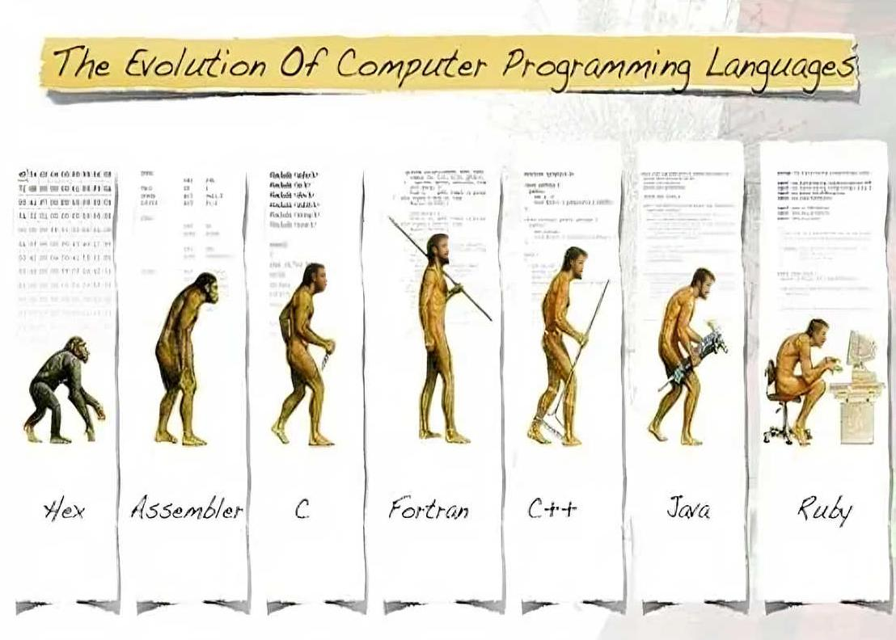
- زبان انسان (English)
- زبانهای برنامه نویسی سطح بالا (C, C++, R, Python)
- زبان برنامه نویسی سطح پایین (Assembly)
- زبان ماشین (01)
نکته. در نهایت اکثر زبانهای برنامه نویسی منطق یکسانی دارند و یا دگیری یک زبان برنامه نویسی، یادگیری زبان برنامه نویسی دیگر را ساده تر میکند.
سایت تبدیل زبان برنامه نویسی R به زبان برنامه نویسی Assembly https://www.codeconvert.ai/r-to-assembly-converter
- خروجی
name Age
1 Mohsen 30
2 Arash 12- R
df = data.frame(
"name" = c("Mohsen", "Arash"),
"Age" = c(30, 12)
)
print(df)- Matlab
df = table;
df.name = {'Mohsen', 'Arash'};
df.Age = [30, 12];
disp(df)- Python
import pandas as pd
df = pd.DataFrame({
"name": ["Mohsen", "Arash"],
"Age": [30, 12]
})
print(df)- Sas
data df;
input name $ age;
datalines;
Mohsen 30
Arash 12
;
run;
proc print data=df;
run;- Fortran
PROGRAM main
IMPLICIT NONE
INTEGER :: i
CHARACTER(LEN=10), DIMENSION(2) :: name
INTEGER, DIMENSION(2) :: age
name(1) = "Mohsen"
name(2) = "Arash"
age(1) = 30
age(2) = 12
DO i = 1, 2
WRITE(*,*) "name: ", name(i), ", age: ", age(i)
END DO
END PROGRAM main- C
#include <iostream>
#include <vector>
#include <string>
#include <unordered_map>
int main() {
std::vector<std::string> name = {"Mohsen", "Arash"};
std::vector<int> Age = {30, 12};
std::unordered_map<std::string, std::vector<int>> df;
df["name"] = name;
df["Age"] = Age;
for (const auto& pair : df) {
std::cout << pair.first << ": ";
for (const auto& value : pair.second) {
std::cout << value << " ";
}
std::cout << std::endl;
}
return 0;
}- Assembly
asm
.data
df_name_data:
.asciz "Mohsen"
.asciz "Arash"
df_age_data:
.int 30
.int 12
df_nrows = 2
df_ncols = 2
.text
.globl main
main:
# Allocate memory for the data frame
movl $df_nrows, %eax
movl $df_ncols, %ebx
imull %ebx, %eax
shl $2, %eax # Each element is 4 bytes (int)
pushl %eax
call malloc
popl %ecx
movl %eax, %edi # edi points to the data frame
# Copy the name data
movl $df_name_data, %esi
movl $0, %ecx
loop1:
cmpl $df_nrows, %ecx
je end1
movl (%esi), %eax
movl %eax, (%edi)
addl $4, %edi # Move to the next column
addl $4, %esi # Move to the next name
incl %ecx
jmp loop1
end1:
# Copy the age data
movl $df_age_data, %esi
movl $0, %ecx
loop2:
cmpl $df_nrows, %ecx
je end2
movl (%esi), %eax
movl %eax, (%edi)
addl $4, %edi # Move to the next column
addl $4, %esi # Move to the next age
incl %ecx
jmp loop2
end2:
# Print the data frame
movl $df_nrows, %eax
movl $df_ncols, %ebx
imull %ebx, %eax # Total number of elements
movl %edi, %ebx # ebx points to the start of the data frame
movl $0, %ecx
loop3:
cmpl %eax, %ecx
je end3
# Print the current element
pushl (%ebx)
pushl $format
call printf
addl $8, %esp
addl $4, %ebx # Move to the next element
incl %ecx
jmp loop3
end3:
# Free the memory
movl %edi, %eax
call free
xorl %eax, %eax
ret
.data
format:
.asciz "%d "کاربرد هر زبان برنامه نویسی
نگاهی به نظر برنامه نویسان
کل دادهها
در این شکل توزیع کشورهای افراد شرکت کننده را ترسیم نمودیم (بعضی افراد از اظهار کشورشان امتناع کردند که از دادهها حذف شدهاند)
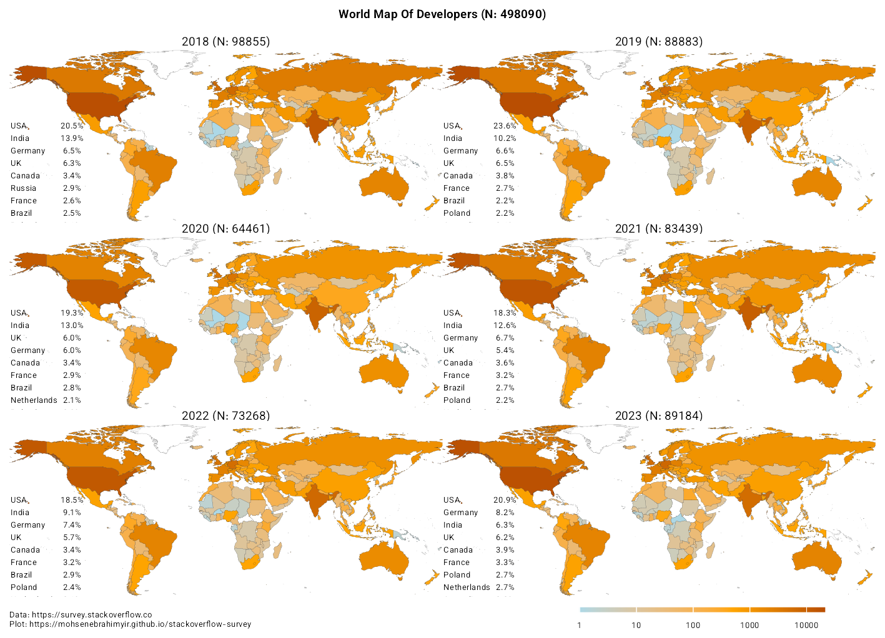
توسعه دهندگان فیلتر شده
با توجه به دادههای موجود در نظر سنجی برای دقت بیشتر و تحلیل بهتر نتایج، بخشی از شرکت کنندهها فیلتر شدهاند.
شرایط توسعه دهندگانی که برای تحلیل انتخاب شدهاند.
- افراد بالای ۲۵ سال سن
- افراد با بیش از ۵ سال سابقه برنامه نویسی حرفهای
- افراد شاغل (تمام یا نیمه وقت) یا خود اشتغال
- افرادی که از انواع گزینههای توسعه دهنده کمتر از ۳ گزینه انتخاب نمودند.
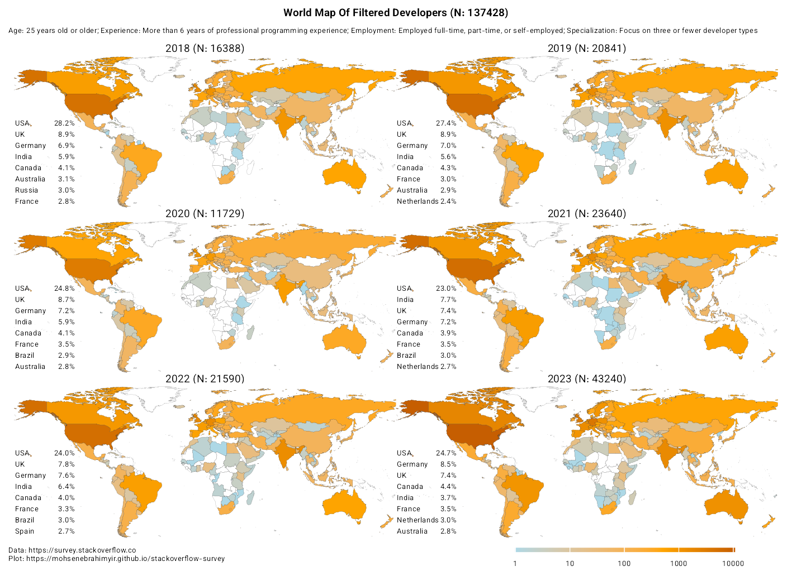
انواع توسعه دهندگان
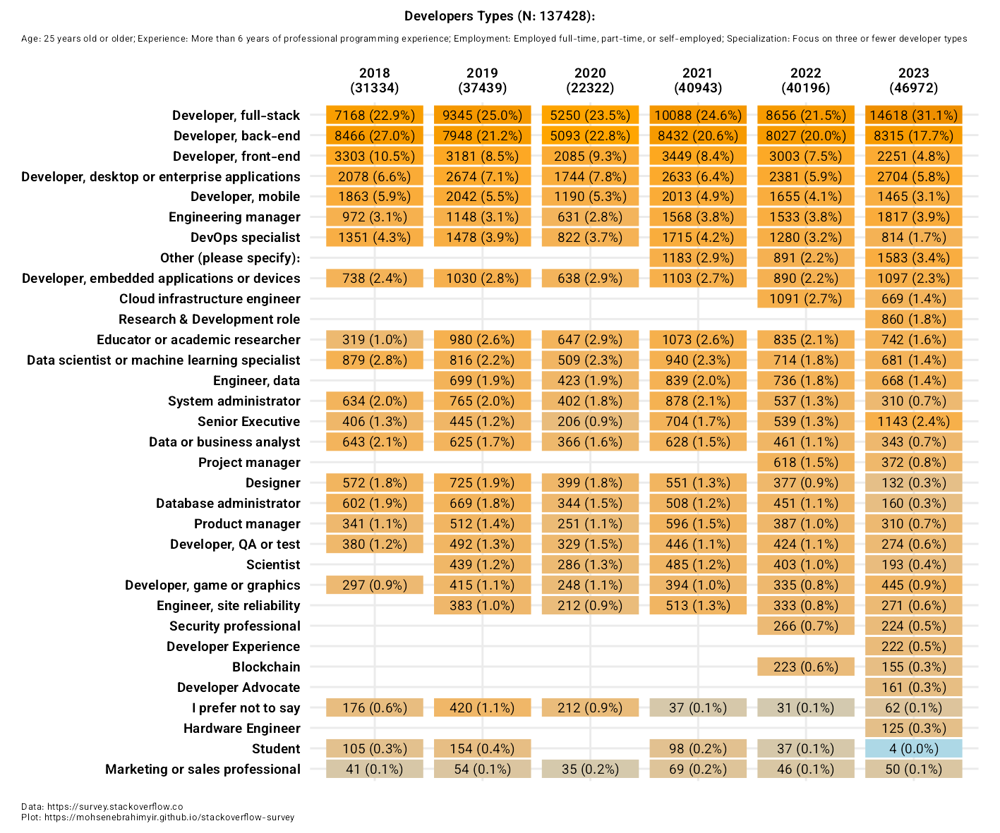
ده زبان برنامه نویسی برتر
نگاه کلی
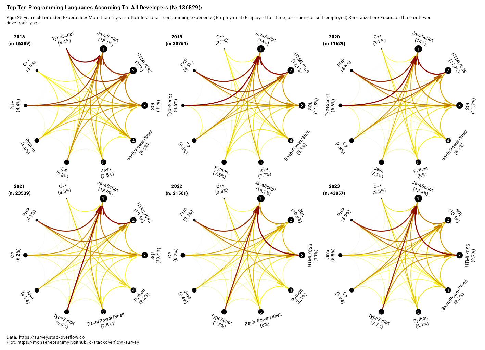
نرم افزار
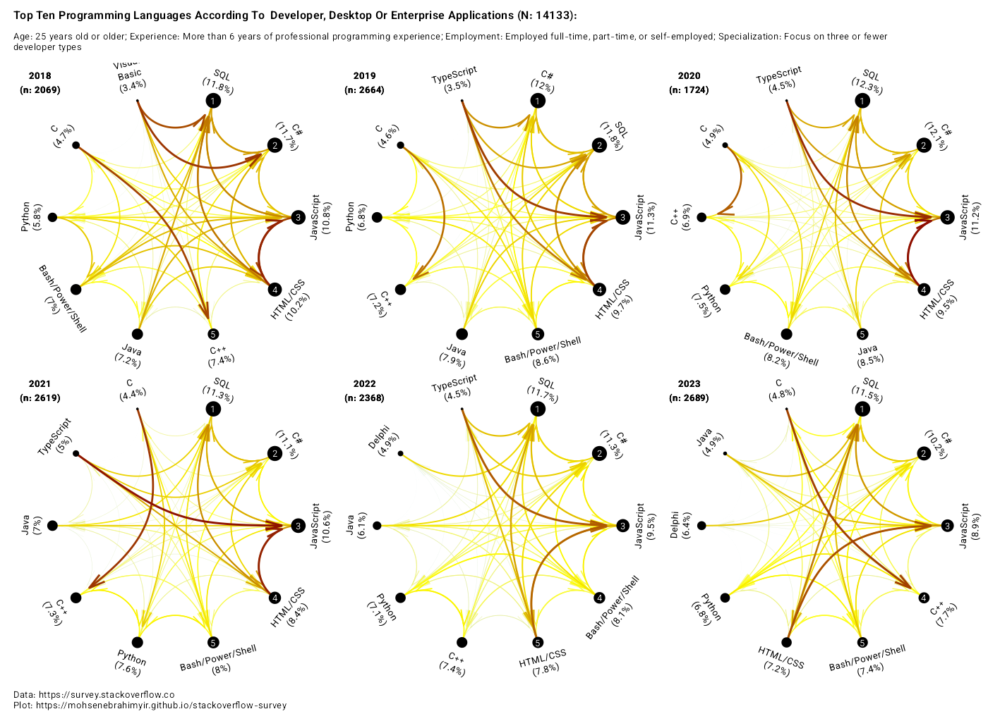
وبسایت (بکاند-فرانت-اند)
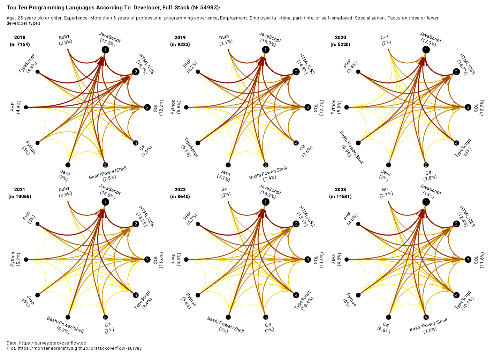
بازی سازی
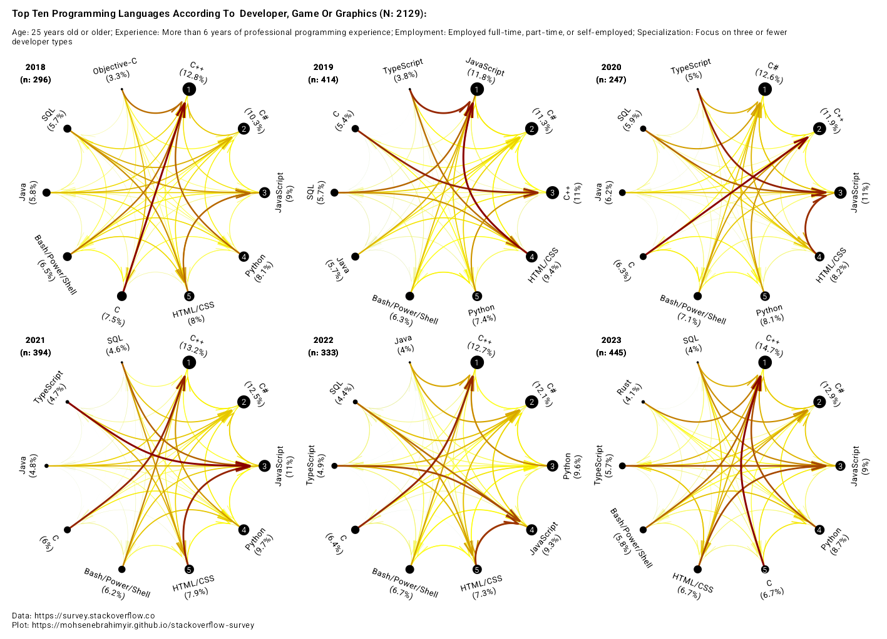
موبایل
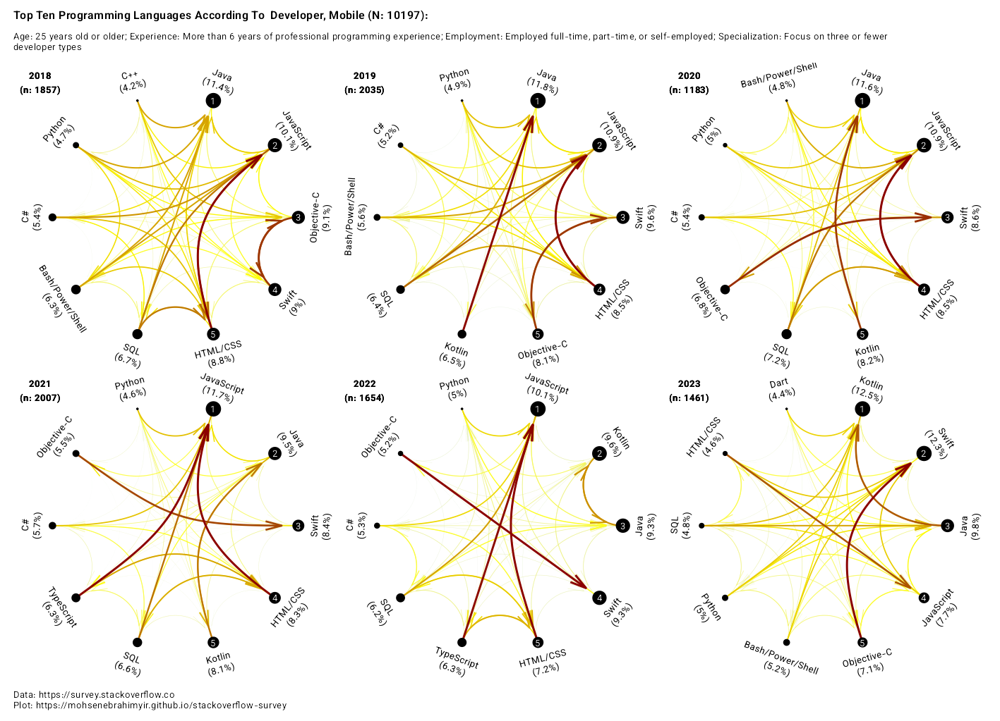
دانشمند داده و یادگیری ماشین
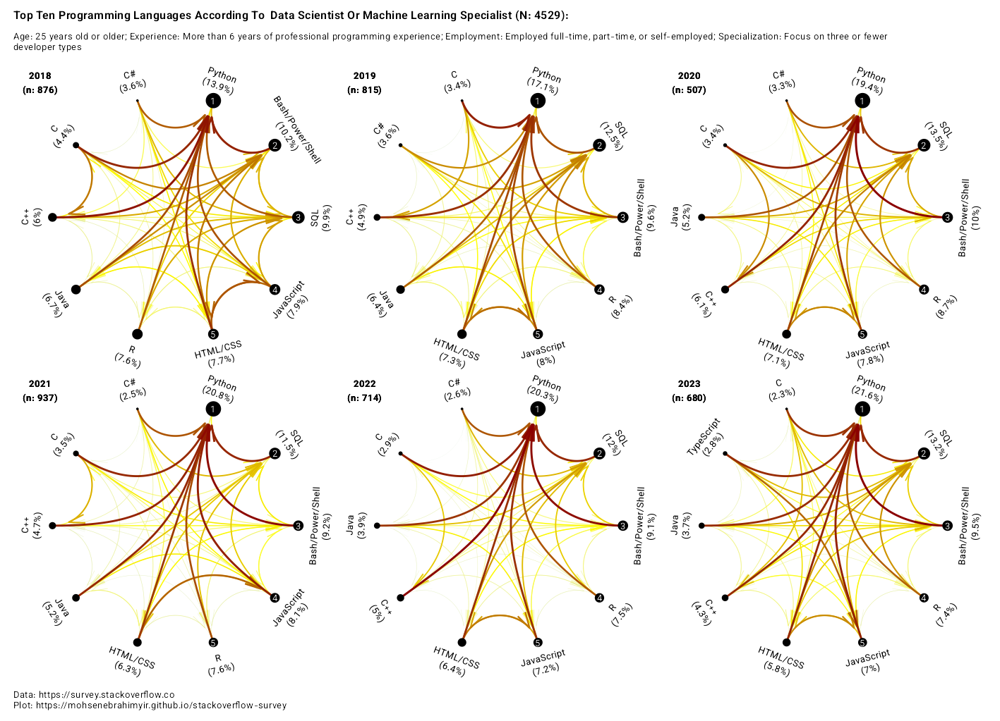
زبان برنامه نویسی برای شروع
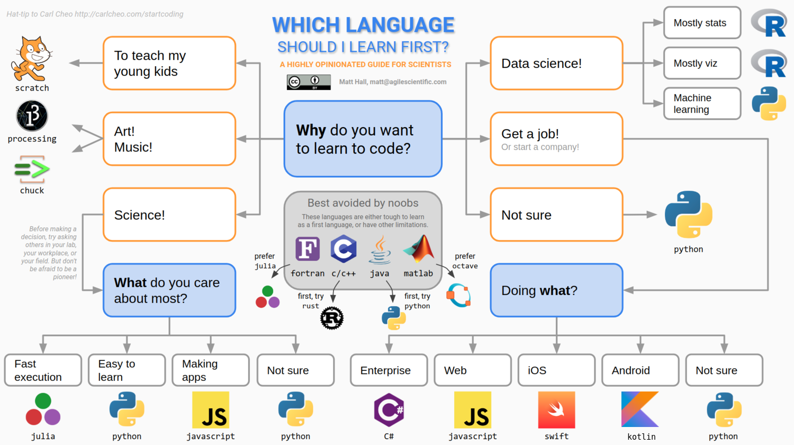
چرا پایتون
شاید دلیل ما برای شروع یادگیری پایتون این باشد که ن یاز به آنالیز دادههای زیادی داریم، یا برای امرار معاش به این راه وارد شدهایم. همچنین اگر در حوزه علم داده (Data Science) و یا هوش مصنوعی (Artificial Intelligence) مشغول به فعالیت هستیم، زبان برنامهنویسی پایتون، گزینه بسیار مناسبی برای ما خواهد بود.
در نهایت اینکه ممکن است به یکی از دلایل زیر، ما نیاز به یادگیری پایتون داشته باشیم:
1- اسکریپت و اتوماسیون در پایتون
2- استفاده از پایتون برای دادههای بزرگ (Big Data)
3- پشتیبانی پایتون از تست (Testing)
4- گرافیک کامپیوتری در پایتون
5- استفاده از پایتون در توسعه وب
6- سازگار و قابل انتقال بودن
7- تفسیر دادههای تصویربرداری عصبی
8- بهرهمندی از پایتون در طراحی Task در نرمافزارهایی مانند Psychopy
مثال حل فیزیک
در ادامه یک مثال فیزیک دبیرستانی همراه با کدنویسی با استفاده از پکیج SymPy در پایتون آورده شده است. مثال مربوط به حل یک مسئلهی حرکت در خط راست است:
\[ x(t) = \frac{1}{2}at^2 + v_0t + x_0 \]
یک جسم با سرعت اولیه \(v_0 = 10 \frac{m}{s}\) و شتاب \(a = 2 \frac{m}{s^2}\) شروع به حرکت میکند. مکان جسم در لحظه \(t=0\) برابر \(x_0 = 5m\) است. مکان جسم را در لحظه \(t=4s\) بیابید.
- استفاده از
SymPy
- تعریف متغیرها
a = symbols("a") # شتاب
v_0 = symbols("v_0") # سرعت اولیه
x_0 = symbols("x_0")
t = symbols("t") # زمان
x = symbols("x") # مکان
x_t = symbols("x_t")
# t, x, x_t, v_0 a x_0 = symbols('t x x_t v_0 a x_0')- معادله مکان بر حسب زمان
x_eq = 1 / 2 * a * t**2 + v_0 * t + x_0
display(x_eq)\(\displaystyle 0.5 a t^{2} + t v_{0} + x_{0}\)
- دادههای مسئله
v0 = 10 # سرعت اولیه (m/s)
a = 2 # شتاب (m/s^2)
x0 = 5 # مکان اولیه (m)
# v0, a, x0 = 10, 2, 5- معادله مکان بر حسب زمان
x_eq = (1 / 2) * a * t**2 + v0 * t + x0
display(x_eq)\(\displaystyle 1.0 t^{2} + 10 t + 5\)
- مکان در لحظه t = 4
t_value = 4
x_at_t = x_eq.subs(t, t_value)
display(x_at_t)\(\displaystyle 61.0\)
# pip install matplotlib
# pip install numpy
import matplotlib.pyplot as plt
import numpy as np
x_func = lambdify(t, x_eq, "numpy")
t_values = np.linspace(0, 5, 10)
x_values = x_func(t_values)
# Create the plot
plt.plot(t_values, x_values, label=str(x_eq))
plt.xlabel("Time (s)")
plt.ylabel("Position (m)")
plt.title("Position vs. Time")
plt.legend()
plt.grid()
plt.show()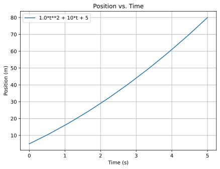